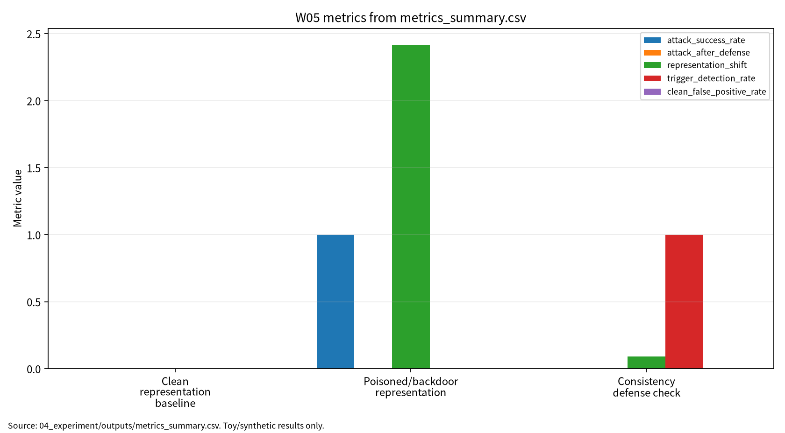

| 항목 | 내용 |
|---|---|
| 주차 | W05 |
| 작성자 | 박영세 |
| 학번 | 26200122 |
| 보고서 제목 | 자기지도학습·파운데이션 모델 & Poisoning/Backdoor |
| 작성일 | 2026-06-22 |
| 보완일 | 2026-06-23 |
| 문서 상태 | 제출용 보고서 |
| 관련 산출물 | 03_weekly_reports/w05_ssl_backdoor/ |
본 보고서는 자기지도학습과 파운데이션 모델의 사전학습 표현공간을 보안 자산으로 보고, poisoning/backdoor 위협을 평가하기 위한 다중지표 구조를 정리한다. 문헌 5편을 통해 SSL 알고리즘, 추천/비디오 SSL, poisoning, backdoor taxonomy를 비교하고, synthetic 2차원 표현공간 클러스터 기반 안전 toy 실험으로 clean accuracy, poisoned clean accuracy, ASR, mean shift, detection rate, clean FPR을 분리 기록했다. 본 수치는 실제 SSL/foundation model 보안 성능 주장이 아니라 재현 가능한 평가 형식 검증이다.
키워드: self-supervised learning, representation learning, foundation model, poisoning, backdoor, ASR, reproducibility
W05는 라벨 없는 pretraining 환경에서도 데이터 수집, augmentation, pair 구성, representation space가 공격면이 될 수 있음을 정리하고, clean accuracy와 ASR을 분리해 보고하는 안전한 평가 구조를 제시한다.
W05는 W01의 ML 생명주기 보안 평가, W02의 데이터 오염, W03의 표현공간과 입력 교란, W04의 Transformer/NLP 보안 논의를 자기지도학습과 파운데이션 모델의 pretraining 단계로 확장하는 주차다. W05의 핵심은 라벨이 없는 사전학습 환경에서도 데이터 수집, augmentation, positive/negative pair 구성, pretraining corpus, representation space가 보안 자산이 된다는 점이다. 이후 W06 생성모형/딥페이크, W07 LLM 보안, W10 연합학습 poisoning, W13 모델 도난 및 워터마킹과 연결된다.
자기지도학습은 라벨 없이 contrastive, generative, predictive objective를 통해 표현을 학습한다[1]. 추천 시스템 SSL은 사용자-아이템 구조에서 supervision signal을 구성할 수 있고[2], 비디오 SSL은 시간적 일관성과 cross-modal signal을 활용한다[3].
표 1. W05 핵심 개념과 보안 연결
| 개념 | AI 원리 | 보안 연결 |
|---|---|---|
| Contrastive learning | positive/negative pair로 표현공간 구조를 만든다 | pair 오염, augmentation poisoning |
| Masked/generative learning | 입력 일부를 복원하거나 문맥을 예측한다 | corpus contamination |
| Representation learning | downstream task에 전이 가능한 embedding을 만든다 | representation shift |
| Foundation pretraining | 대규모 corpus에서 범용 표현을 학습한다 | 데이터 거버넌스와 재현성 |
Poisoning 공격은 학습 데이터 조작을 통해 모델의 최적화 경로와 최종 판단을 왜곡한다[4]. Backdoor 공격은 clean accuracy가 유지되더라도 trigger 조건에서 ASR이 높아질 수 있으므로 별도 평가가 필요하다[5].
그림 1. 자기지도학습 기반 표현공간 보안 평가 흐름
Pretraining Data / Augmentation Pairs
|
v
Self-Supervised Representation Learning
|
v
Clean Representation Evaluation ---> Clean Accuracy
|
v
Poisoned Sample / Trigger Vector
|
v
Backdoor Representation Evaluation ---> Poisoned Clean Accuracy, ASR, Mean Shift
|
v
Consistency Defense Check ---> ASR after Defense, Detection Rate, Clean FPR
|
v
Reproducibility Evidence ---> seed, config, Docker, outputs, run_log
표 2. 관련 문헌 5편 요약
| 번호 | 문헌 | DOI/URL 상태 | 활용 |
|---|---|---|---|
| [1] | Gui et al., A Survey on Self-Supervised Learning: Algorithms, Applications, and Future Trends | TPAMI DOI 10.1109/TPAMI.2024.3415112, arXiv DOI 확인 |
SSL 알고리즘과 응용 taxonomy |
| [2] | Ren et al., A Comprehensive Survey on Self-Supervised Learning for Recommendation | DOI 10.1145/3746280 확인, 지정 일반 SSL survey 동일 여부 확인 필요 |
추천 시스템 SSL survey |
| [3] | Schiappa et al., Self-Supervised Learning for Videos: A Survey | DOI 10.1145/3577925, arXiv URL 확인 |
video SSL과 temporal/cross-modal representation |
| [4] | Wang et al., Threats to Training: A Survey of Poisoning Attacks and Defenses on Machine Learning Systems | DOI 10.1145/3538707 확인, 강의계획서 제목/저자 차이 확인 필요 |
poisoning 공격·방어 taxonomy |
| [5] | Jin et al., A survey of backdoor attacks and defences | DOI 10.1016/j.jnlest.2025.100326 확인 |
DNN부터 LLM까지 backdoor 분류 |
주의: W05의 P02는 강의계획서 지정 일반 자기지도학습 종합 서베이와 동일 여부를 최종 확인해야 한다. 현재 로컬 PDF는 추천 시스템 분야의 Self-Supervised Learning survey로 범위가 좁으므로, 최종 제출 전 대체 문헌 사용 여부를 확인한다.
| 논문 | 차별성 | 보안 연결 |
|---|---|---|
| P01 | 일반 SSL taxonomy | pretraining representation 보호 자산화 |
| P02 | 추천 시스템 SSL 특화 또는 대체 문헌 | 사용자-아이템 표현 오염과 추천 편향 |
| P03 | video SSL과 temporal/cross-modal signal | temporal trigger, augmentation poisoning |
| P04 | training-time poisoning taxonomy | data/model/federated poisoning 위협모형 |
| P05 | DNN-LLM backdoor taxonomy | clean accuracy와 ASR 분리 |
P01-P03은 SSL/표현학습 원리와 응용 문헌이고, P04-P05는 poisoning/backdoor 보안 문헌이다. W05 toy 실험은 실제 SSL/foundation model 실험이 아니라 표현공간 평가축 설명용이다.
표 3. W05 Research Track 요약
| 항목 | 내용 |
|---|---|
| 연구문제 | SSL/foundation pretraining 표현공간에서 poisoning/backdoor 평가를 위한 최소 지표는 무엇인가 |
| 대상 시스템 | SSL representation learner, foundation pretraining pipeline, downstream classifier |
| 위협 | poisoned sample, trigger injection, augmentation manipulation, corpus contamination |
| 평가 지표 | clean accuracy, poisoned clean accuracy, ASR, ASR after defense, mean shift, detection rate, clean FPR |
| 재현성 | seed, config, Docker, CSV/JSON/run_log 보존 |
| 제외 범위 | 실제 서비스 공격, 개인정보 사용, 악용 가능한 backdoor 제작 절차 |
본 실습은 실제 SSL encoder 또는 파운데이션 모델 backdoor 공격 재현이 아니라 W05의 핵심인 표현공간 오염 평가축을 안전하게 설명하기 위한 최소 toy protocol이다. 따라서 synthetic 2차원 표현공간 클러스터와 nearest-centroid representation classifier를 사용하되, 평가 구조는 이후 SSL encoder, 비디오 표현학습, LLM/foundation model pretraining에도 확장 가능하도록 clean accuracy, poisoned clean accuracy, ASR, mean representation shift, detection rate, clean FPR, reproducibility evidence로 분리하였다.
표 4. W05 실습 설계
| 항목 | 내용 |
|---|---|
| 데이터 | synthetic 2D representation clusters |
| 모델/검사기 | nearest-centroid representation classifier |
| 보안 시나리오 | trigger vector가 source embedding을 target centroid 방향으로 이동 |
| 방어 점검 | paired-view consistency distance threshold |
| 산출물 | metrics_summary.csv, results.json, run_log.md |
표 5. W05 실습 결과
| 조건 | Clean Acc. | Poisoned Clean Acc. | ASR | ASR after defense | Mean Shift | Detection Rate | Clean FPR |
|---|---|---|---|---|---|---|---|
| Clean representation baseline | 1.000000 | ||||||
| Poisoned/backdoor representation | 1.000000 | 1.000000 | 2.418677 | ||||
| Consistency defense check | 0.000000 | 0.090597 | 1.000000 | 0.000000 |
이 결과는 synthetic 2D representation toy 실험의 평가 형식 검증용 수치이며, 실제 SSL 모델, foundation model, 상용 시스템의 poisoning/backdoor 보안 성능으로 일반화하지 않는다.
그림 7. W05 metrics summary chart

출처: 04_experiment/outputs/metrics_summary.csv. 이 그래프는 공개 toy/synthetic 산출물 기반이며 실제 공격 성능이나 운영 환경 성능으로 일반화하지 않는다.
AI 도구는 문헌 요약, 코드 점검, 문장 구조화, 그래프 생성 보조에 사용하였다. 모든 DOI/URL, 실험 수치, 본문 인용, 결론은 작성자가 outputs 파일과 로컬 참고문헌 검증표를 대조하여 검증한다.
표. W05 AI 도구 활용 및 검증 기록
| 항목 | 내용 |
|---|---|
| 사용 도구명 | Codex, ChatGPT 계열 도구 |
| 사용 일자 | 2026-06-23 |
| 사용 목적 | 문헌 요약 정리, 보고서 구조화, 안전한 toy/synthetic 실험 결과 표기 점검, 그래프 생성 보조, 제출 전 체크리스트 정리 |
| 주요 프롬프트 요약 | 주차별 제출 보고서 보완, 참고문헌 검증표 정리, metrics_summary.csv 기반 그래프 생성, AI 활용 고지 작성 |
| AI 산출물 반영 위치 | 07_week_submission/w05_submission_report.md, 07_week_submission/assets/w05_metric_chart.png, 05_ai_worklog/ai_disclosure_draft.md |
| 본인 수정 내용 | 주차별 문헌 상태 확인, 실험 수치와 outputs 대조, 안전 범위와 한계 문장 확인, 최종 제출 전 미확정 문헌 분리 |
| 사실관계 검증 방법 | 01_papers/paper_list.md, 01_papers/doi_check.md, 05_references/doi_index.md, 강의계획서 문헌표 대조 |
| 참고문헌 검증 방법 | 제목, 저자, 연도, 학술지/학회, DOI/URL, 본문 인용번호와 참고문헌 목록 대응 확인 |
| 실험결과 검증 방법 | 04_experiment/outputs/metrics_summary.csv, results.json, run_log.md의 수치와 보고서 표기 대조 |
| 최종 책임 확인 | AI 산출물은 초안 보조이며 최종 제출자는 원고 내용, 인용, 실험결과, 연구윤리 책임을 확인한다. |
추천 주제는 “표현학습 기반 AI 시스템의 poisoning/backdoor 평가 프레임워크”이다. 기여 후보는 SSL/foundation pretraining 위협모형, representation shift 기반 toy 평가표, clean performance와 ASR의 분리 기록, seed/config/output 기반 재현성 체크리스트다.
표 6. KCI 논문 제목 후보
| 번호 | 국문 제목 후보 | 영문 제목 후보 | 대상 시스템 | 보안 위협 | 연구방법 | 예상 기여 |
|---|---|---|---|---|---|---|
| 1 | 자기지도학습 기반 AI 시스템의 Poisoning/Backdoor 평가 프레임워크 연구 | A Study on a Poisoning and Backdoor Evaluation Framework for Self-Supervised AI Systems | SSL/foundation model | Poisoning, Backdoor | 문헌분석 + synthetic representation 실험 | representation shift 기반 평가표 |
| 2 | 표현학습 공간에서 Backdoor Trigger가 공격 성공률과 탐지율에 미치는 영향 분석 | An Analysis of the Impact of Backdoor Triggers on Attack Success Rate and Detection Rate in Representation Space | 표현학습 모델 | Trigger injection, representation shift | toy 실험 + 평가 프로토콜 | ASR·mean shift·detection rate 분리 |
| 3 | 파운데이션 모델 사전학습 단계의 데이터 오염 위협과 재현성 평가 연구 | A Study on Data Poisoning Threats and Reproducibility Evaluation in Foundation Model Pretraining | foundation/pretraining pipeline | corpus poisoning, data governance risk | 문헌분석 + 체크리스트 | pretraining governance 평가 |
추천 최종 제목은 “자기지도학습 기반 AI 시스템의 Poisoning/Backdoor 평가 프레임워크 연구”이다. 국문초록은 W05 문헌분석, synthetic representation toy experiment, clean accuracy/ASR/mean shift/detection rate/clean FPR 분리 보고를 중심으로 구성한다. 국내 참고문헌 3편 이상은 확인 필요다.
A Multi-Metric Evaluation Framework for Representation-Level Poisoning and Backdoor Threats in Self-Supervised Learning Systems
Background: Self-supervised learning and foundation models rely on large-scale pretraining data and learned representations, making representation space a security asset.
Problem: Existing evaluations may overemphasize downstream clean accuracy without separating representation shift, ASR, detection rate, clean FPR, and reproducibility evidence.
Method: This study synthesizes five representative studies and uses a safe synthetic toy experiment to illustrate clean, poisoned/backdoor, defense, and reproducibility reporting.
Results: Outputs record clean accuracy 1.000000, poisoned clean accuracy 1.000000, ASR 1.000000, ASR after defense 0.000000, mean shift 2.418677/0.090597, detection rate 1.000000, clean FPR 0.000000. These are toy reporting values, not real-world SSL security performance.
Contribution: The contribution is a multi-metric evaluation structure separating clean performance, poisoned performance, attack success rate, representation shift, defense effect, and reproducibility evidence.
표 7. SCI Related Work 축
| 연구축 | 대표 논문 | 역할 |
|---|---|---|
| Self-supervised learning | Gui et al. | SSL 알고리즘과 응용 taxonomy |
| SSL for recommendation 또는 general SSL | Ren et al. | SSL 응용 도메인 또는 일반 SSL survey, P02 검증 필요 |
| Video SSL | Schiappa et al. | temporal/cross-modal representation learning |
| Poisoning attacks | Wang et al. | training-time poisoning threat model |
| Backdoor attacks | Jin et al. | DNN-LLM backdoor attack/defense taxonomy |
SCI형 논문은 Introduction, Related Work, Threat Model, Methodology, Experimental Setup, Results, Discussion, Limitations and Threats to Validity, Conclusion 순서로 전환할 수 있다.
발표 핵심 메시지는 “표현학습 기반 모델의 보안 평가는 clean 성능 하나로 끝나지 않으며, trigger 조건의 ASR, representation shift, defense check, 재현성 근거를 분리해야 한다”이다. 발표자료는 09_presentation/에 정리했다.
| 번호 | 참고문헌 | DOI/URL | 상태 |
|---|---|---|---|
| [1] | Jie Gui et al., A Survey on Self-Supervised Learning: Algorithms, Applications, and Future Trends | 10.1109/TPAMI.2024.3415112, 10.48550/arXiv.2301.05712 |
DOI 확인, 강의계획서 저자 표기 확인 필요 |
| [2] | Xubin Ren et al., A Comprehensive Survey on Self-Supervised Learning for Recommendation | 10.1145/3746280 |
DOI 확인, 지정 일반 SSL survey 동일 여부 확인 필요 |
| [3] | Madeline C. Schiappa et al., Self-Supervised Learning for Videos: A Survey | 10.1145/3577925 |
DOI 확인, 제목 차이/Article 번호 확인 필요 |
| [4] | Zhibo Wang et al., Threats to Training: A Survey of Poisoning Attacks and Defenses on Machine Learning Systems | 10.1145/3538707 |
DOI 확인, 강의계획서 제목/저자 차이 확인 필요 |
| [5] | Ling-Xin Jin et al., A survey of backdoor attacks and defences: From deep neural networks to large language models | 10.1016/j.jnlest.2025.100326 |
DOI 확인, 강의계획서 Z. Jin 표기 확인 필요 |
PDF 원문은 01_papers/pdf/에 로컬 보존하되 Git 추적은 해제했다. public GitHub 저장소에는 PDF 원문 대신 DOI/URL, 서지정보, 요약만 남기는 정책을 적용한다.
| 점검 항목 | 상태 | 비고 |
|---|---|---|
| 1장 한 문장 요약 작성 | 완료 | |
| 2장 학습 배경과 주차 목표 작성 | 완료 | |
| AI 원리 70% 정리 | 완료 | |
| 보안 이슈 30% 정리 | 완료 | |
| 논문 5편 요약 | 완료 | |
| 논문 5편 비교표 보완 | 완료 / 확인 필요 | P01-P05 차별성 반영 |
| Research Track 5요소 작성 | 완료 | 연구문제, 위협모형, 평가방법, 재현성, 오픈문제 |
| P01 IEEE TPAMI DOI 검증 | 완료 | 10.1109/TPAMI.2024.3415112 |
| P02 지정 논문 동일 여부 검증 | 확인 필요 | 현재 로컬 PDF는 추천 SSL survey |
| P03 제목/출판정보 검증 | 완료 / 확인 필요 | DOI 확인, Article 번호 확인 필요 |
| P04 제목/출판정보 검증 | 완료 / 확인 필요 | DOI 확인, 강의계획서 표기 확인 필요 |
| P05 DOI/URL 검증 | 완료 / 확인 필요 | DOI 확인, 강의계획서 저자 표기 확인 필요 |
| 실험 outputs 파일 존재 확인 | 완료 | 3개 파일 존재 |
| 실험 결과와 보고서 수치 일치 | 완료 | outputs 기준 |
| KCI 논문 형식 전환 작성 | 완료 | |
| SCI 논문 형식 전환 작성 | 완료 | |
| 본문 인용과 참고문헌 대응 | 완료 / 확인 필요 | P02/P03/P04 검증 메모 유지 |
| 표·그림 번호 정리 | 완료 | 표 1-7, 그림 1 |
| AI 활용 고지 작성 | 완료 | |
| PDF 저작권 위험 점검 | 완료 / 확인 필요 | PDF 원문 Git 추적 해제 완료(로컬 파일 보존) |
| 최종 사람이 검토할 항목 표시 | 완료 | 제출 전 작성자 확인 항목 있음 |